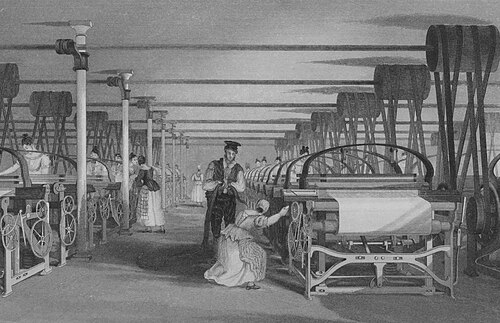

ریشههای انقلاب و شکلگیری آن زمینههای شکلگیری انقلاب صنعتی، ریشه در تحولات گستردهٔ بریتانیا در نیمهٔ دوم سدهٔ هجدهم دارد. بریتانیا تقریباً تا سال ۱۸۵۰، با توجه به تحولات پیش آمده، جزو ثروتمندترین کشورهای دنیا محسوب میشد. بنابراین میتوان گفت که اقتصاد جهان در آن زمان بر پایهٔ بریتانیا بنا شد. این کشور در این زمان صاحب نفوذی وسیع گردید، به صورتی که کمتر کشوری میتوانست با آن به رقابت بپردازد. در آن زمان بریتانیا تنها صادرکننده و وارد کنندهٔ عمده، دارندهٔ کارگاههای تولیدی، و تنها کشور دارندهٔ نیروی دریایی در جهان بود. به مرور این انقلاب در کشورهای اروپایی گسترش مییافت. در نهایت تا اواخر سدهٔ نوزدهم دو کشور آلمان و آمریکا، از نظر تولید کالاهای صنعتی جایگاه ویژهای را از آن خود کرده و از بریتانیا پیشی گرفتند. با وجود شکلگیری عوامل و شرایط متفاوت، بریتانیا توانست نخستین زمینههای شکلگیری انقلاب صنعتی را درون سرزمین خویش جای دهد. بریتانیا زادگاه انقلاب صنعتی در قرن هجدهم شد. در واقع با وجود جمعیت، منابع طبیعی، اختراعات، پول و بهطور کلی بریتانیا از هر آنچه برای صنعتی شدن نیاز داشت، برخوردار بود. با وجود اینکه کشورهای دیگری چون فرانسه و هلند نیز این قابلیت را داشتند، اما بریتانیا در این راه پیشگام شد و ترقی خاصی نمود. با روی کار آمدن انقلاب کشاورزی، به عنوان یکی از عوامل ریشههای شکلگیری انقلاب و با گسترش و پیشرفت روزافزون کشاورزی و دامداری، بریتانیا توانست برای جمعیت بیشتری غذا فراهم کند. از این رو نیاز به نیروی کار کمتر شد و خانوادههای معمولی برخلاف سایر مناطق اروپا دیگر مجبور نبودند بخش زیادی از درآمد خویش را صرف خرید مواد غذایی کنند و در نتیجه توانستند کالاهای جدید صنعتی را خریداری کنند. انقلاب صنعتی بریتانیا به کارگر و مصرفکننده احتیاج داشت که بریتانیا عاری از آن نبود. در سدههای پیش از قرن هجدهم، جمعیت بریتانیا رشد چشمگیری نداشت و تقریباً میتوان گفت که در سال ۱۷۰۰، جمعیت این کشور کمتر از هفت میلیون نفر بود. اما به مرور زمان و در نخستین دهههای قرن نوزدهم، جمعیت این کشور به یازده میلیون نفر رسید. میزان مرگ و میر در این سده کاهش پیدا کرد که شاید بتوان یکی از دلایل آن را آموزش بهتر ماماها و تأسیس زایشگاهها دانست. به مرور زمان بیماریهای واگیر نیز از میان رفتند. به عنوان مثال طاعون خیارکی یا مرگ سیاه در این دوره اثری از خود به جای نگذاشتند. اما علت دیگر کاهش مرگ و میر دسترسی به غذای بیشتر بود. به طوری که در قرن هجدهم تولید مواد غذایی شصت درصد افزایش یافت. در نهایت میتوان گفت که رشد جمعیت سبب شد بازارهایی برای انواع کالاها، همانند کفش، پارچه، آجر، ریشتراش، چاقو، قیچی، سنجاق، ظروف آشپزخانه و … فراهم آید. در این برهه بود که صنعت بریتانیا با سرعت بخشیدن به تولید کالاهای مورد نیاز خود و احداث کارخانههای بیشتر، راهی را برای پاسخگویی به این تقاضا فراهم نمود. از این رو رشد جمعیت سبب گردید که در نیمهٔ دوم سدهٔ هجدهم کارگران اضافی در کارخانههای رو به ازدیاد بریتانیا کار کنند و کارگران روستایی که زمانی کارگران ماهر در صنایع مختص به خود بودند، نیروی بالقوهای برای شرکتهای صنعتی شوند. افزایش جمعیت بریتانیا رابطهٔ گسترده و پیچیدهای با گسترش انقلاب صنعتی داشتهاست. به طوری که فیلیس دین، تاریخنگار اقتصادی مینویسد: «بدون رشد جمعیت، … انقلاب صنعتی بریتانیا به سبب کمبود نیروی کار به تأخیر میافتاد… بدون افزایش تقاضا…، که بازتاب … رشد جمعیت بود، برای تولیدکنندگان بریتانیایی انگیزهٔ کمتری برای توسعه وجود میداشت …، و از این رو … بخشی از پویایی که نیروی محرکهٔ انقلاب صنعتی بود، از دست میرفت.» بریتانیا با سرمایهگذاری در ماشینهای صنعتی جدید و تأسیس کارخانه، صاحب یک بانک مرکزی کارآمد و کاملاً پیشرفته شد و مردم بریتانیا به راحتی میتوانستند از اعتبارات اسنادی برای تسهیل در معاملات سرمایهای استفاده کنند. اکثر کارخانهداران اولیه در آن زمان، بازرگانان و صاحب شرکتهایی بودند که در سدهٔ هجدهم از صنایع روستایی بهره برده بودند. در این دوره تاجران به آسانی میتوانستند ثروت لازم را بهدست آورند اما به همان آسانی ثروت آنان از دست میرفت. شرکتهای بازرگانی در دوره اولیه خود، به صورت مالکیت فردی یا خانوادگی درآمده بود. و تاجران برای سهولت کار خویش از مشارکت و کمک نزدیکان و دوستان خویش استفاده میکردند. زغالسنگ و سنگ آهن از جمله منابع کانی مورد نیاز کارخانهها بود و آنچنان وسعتی را از آن خود نکرده بود و با توجه به مسافت کوتاه میان شهرها، حمل و نقل بسیار آسان انجام میگرفت. در اواسط سدهٔ هفدهم برای ساخت جادهها و پلهای جدید، سرمایهگذاری دولتی و خصوصی وسیعی انجام گرفت. پس از آن در دههٔ ۱۷۵۰و ۱۷۶۰ چنین سرمایهای صرف ساختن آبراههها شد. تمامی جادهها و رودخانههای موجود در آن دوره سبب متصل کردن مراکز عمده صنعتی در شمال و میلند و لندن شد. با توجه به این اینکه در این کشور هیچ عوارض گمرکیای وجود نداشت، تجارت به آسانی انجام میگرفت. در روند صنعتی شدن کشور بریتانیا، حکومت نقش بسزایی را ایفا میکرد. در حفظ ثبات نهادهای حکومت و وضع قوانین برای حفاظت اموال خصوصی، پارلمان توانست جو مناسبی را برای مشاغل ایجاد کند. بریتانیا در مقایسه با دیگر سرزمینهای اروپایی محدودیتهای کمتری برای شرکتهای خصوصی اعمال میکرد. از دیگر عوامل مهم در شکلگیری انقلاب صنعتی در این سرزمین، تولید کالاهای پرمصرف به قیمت ارزان بود. صنایع نساجی و ماشینی موجود در بریتانیا توانست پاسخگوی این نیاز باشد. در این خصوص دانیل دفو در سال ۱۷۲۸ چنین نوشتهاست: «عاقبت آنکه میبینیم خانه و مسکن خود را به نحو مطلوبی ساختهاند و دستکم کاملاً صاحب وسایل مورد نیاز و مفید خانگی هستند: حتی کسانی را که ما فقیر و خانهبهدوش و مردم زحمتکش میدانیم، دارای چنین وضعی میباشند، جای گرم میخوابند، در وفور نعمت زندگی و سختکار میکنند و دیگر چیزی نمیخواهند. اینان مردمی هستند که کل مصرف شما را از مسافات دور میآورند. برای اینان است که بازارهای شما در شبهای شنبه هم باز است؛ زیرا آنان معمولاً دستمزد هنگفت خود را دیر میگیرند… در یککلام اینان حیات تمام تجارت ما هستند و همگی با کثرت خویش، نه در صدها یا هزاران یا صدهزار تن بلکه در میلیونها نفر با دریافت دستمزد خود حیات پرنعمتی دارند و از طریق زندگی آزاد و سخی و پر مصرف اینان است که مصرف داخلی ما به چنان حجم بزرگی رسیده که میتوانند هم از تولید خودمان و هم از تولید خارجی مصرف کنند.
